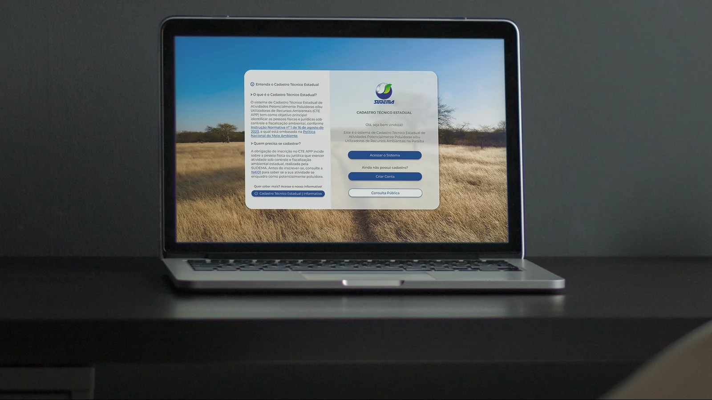
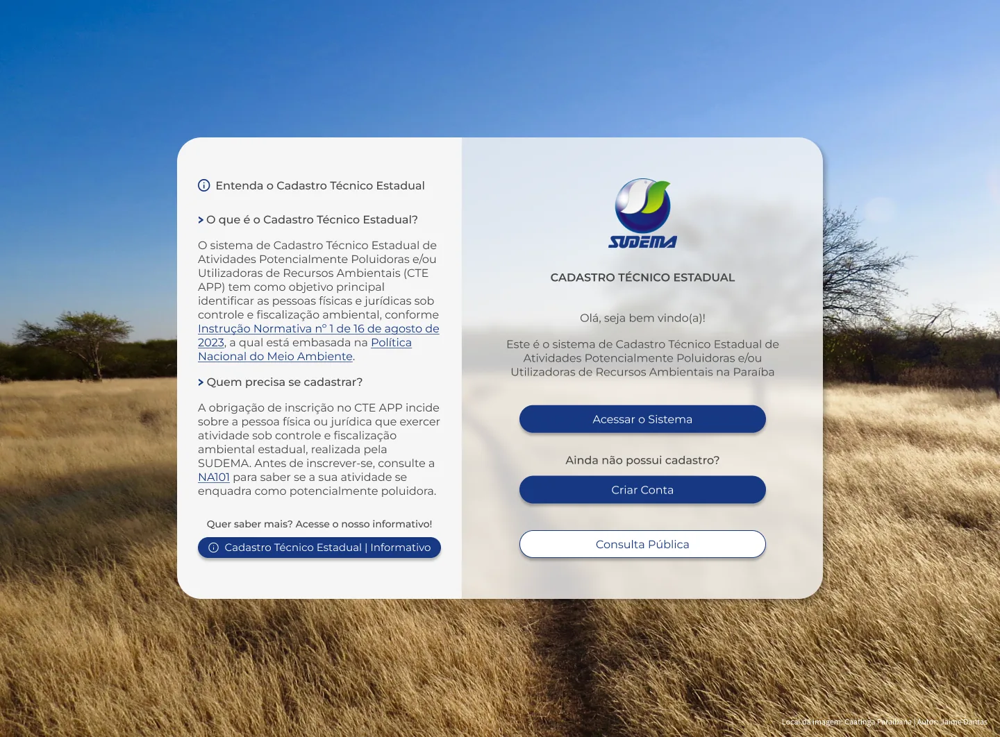
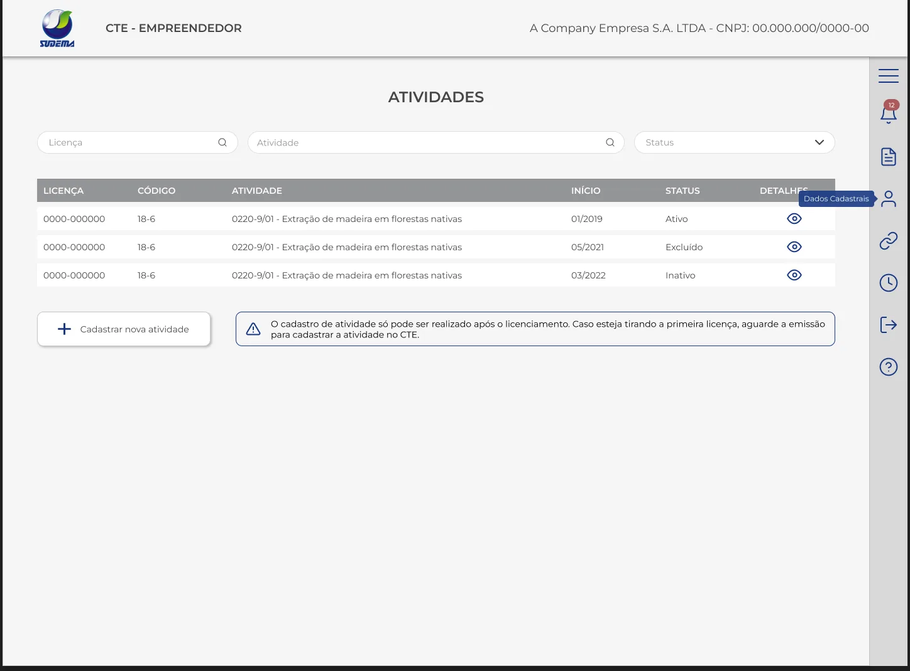
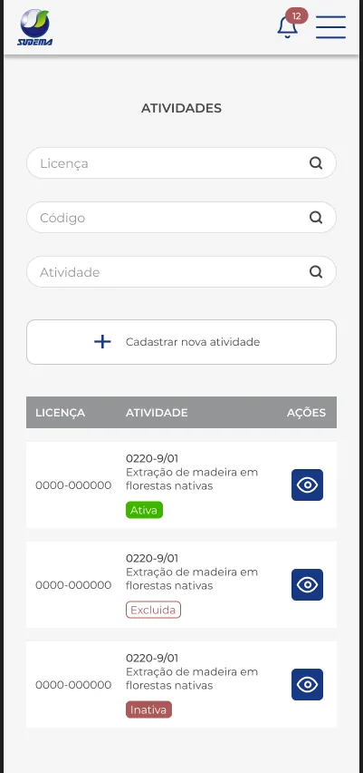
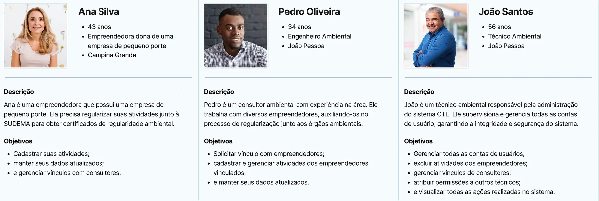
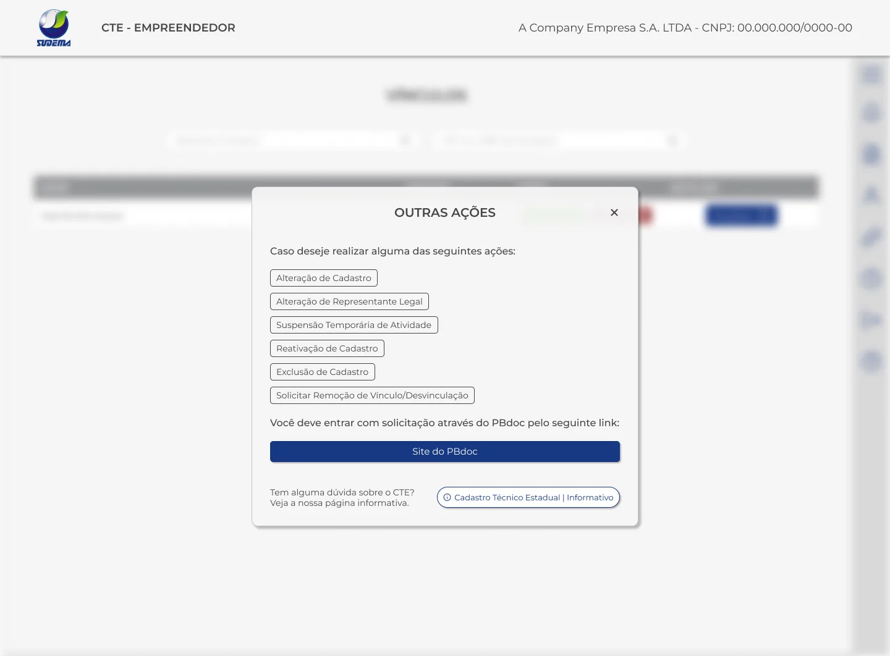
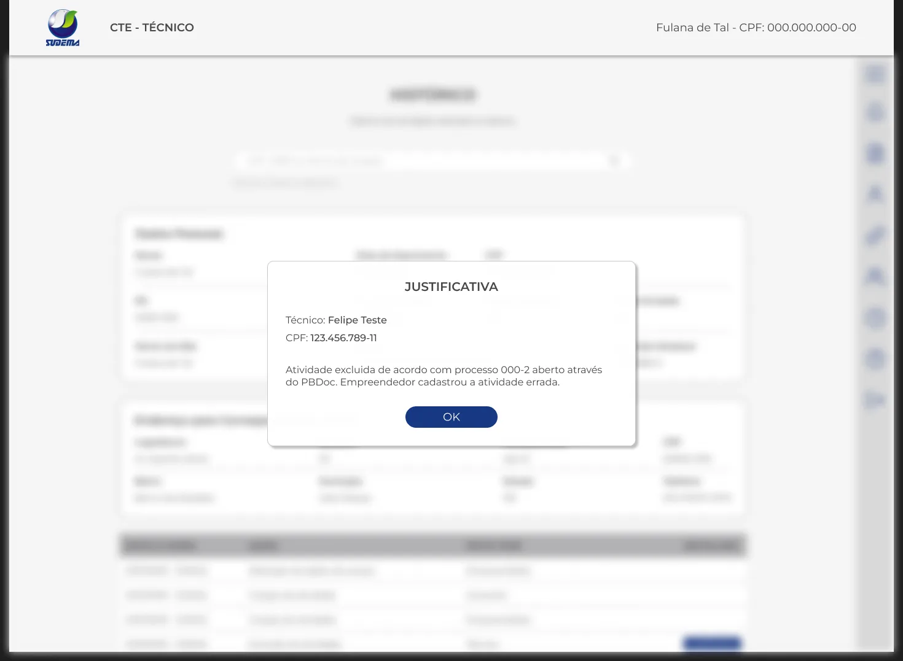

Cadastro Técnico Estadual
Documentação da experiência do usuário no Cadastro Técnico Estadual: as interações, interfaces e fluxos do sistema, pensados para garantir usabilidade, eficiência e satisfação de quem o usa.

Introdução
Esta documentação tem como foco a experiência do usuário no Cadastro Técnico Estadual (CTE). O objetivo é detalhar as interações, interfaces e fluxos de usuários do sistema, garantindo a usabilidade, a eficiência e a satisfação dos usuários finais.
Problema a ser resolvido
O principal problema é a dificuldade enfrentada pelos empreendedores para cadastrar suas atividades junto à SUDEMA e gerenciar os consultores vinculados à sua conta. Além disso, era preciso melhorar a eficiência do gerenciamento de dados e das interações entre os usuários do sistema.
Solução
A solução proposta é uma plataforma on-line integrada e intuitiva, que facilita o cadastro de atividades pelos empreendedores, simplifica a busca e o vínculo com consultores ambientais qualificados e oferece ferramentas de gerenciamento eficazes para todos os perfis de usuário.
Visão geral da experiência
O CTE foi pensado e desenvolvido com uma abordagem centrada no usuário, priorizando a facilidade de uso, a clareza das informações e a eficiência nas interações.
Princípios de design
- Usabilidade: o sistema foi projetado para ser intuitivo e fácil de usar, independentemente da familiaridade da pessoa com tecnologia. As interfaces foram simplificadas e organizadas de forma lógica, para que todos naveguem com confiança e sem esforço excessivo.
- Clareza de informações: um dos principais objetivos do CTE é oferecer informações claras e relevantes em todos os momentos. Da página inicial aos formulários de cadastro e gerenciamento, cada elemento da interface foi pensado para comunicar de forma concisa e compreensível.
- Consistência: as interfaces seguem um conjunto consistente de padrões de design, o que facilita a familiarização e a navegação em todo o sistema.
- Feedback: o sistema responde de forma clara e imediata a cada ação, para que o usuário saiba sempre o status das operações.
- Suporte: páginas de ajuda e formulários de dúvidas facilitam a comunicação entre usuários e equipe técnica.

Componentes de interface
- Navegação intuitiva: estrutura clara e hierárquica, que facilita encontrar e acessar as diferentes funcionalidades.
- Formulários amigáveis: projetados com atenção especial à usabilidade, com descrições, exemplos, validação em tempo real e feedback para orientar o preenchimento.
- Controles interativos: botões, links e outros elementos interativos com destaque visual e comportamento consistente.
- Feedback visual: cores e ícones comunicam informações importantes e orientam o usuário em suas ações.
Responsividade
O sistema tem design responsivo e se adapta automaticamente a diferentes dispositivos e tamanhos de tela, garantindo uma experiência consistente no computador, no tablet e no celular.


Personas
O CTE atende três perfis com objetivos e rotinas bem diferentes: a empreendedora que precisa se regularizar, o consultor que faz isso por vários clientes e o técnico que administra o sistema.

Histórias de usuário
Para a empreendedora
- Como Ana Silva, quero cadastrar novas atividades no CTE para obter certificados de regularidade.
- Como Ana Silva, quero visualizar meus dados cadastrais e atualizar meus dados de acesso e contato.
- Como Ana Silva, quero ver o histórico de todas as ações realizadas na minha conta, incluindo as que meu consultor realizou.
- Como Ana Silva, quero aceitar ou recusar solicitações de vínculo de consultores para receber assistência na regularização ambiental.
Para o consultor
- Como Pedro Oliveira, quero solicitar vínculo com empreendedores para ajudá-los no processo de regularização ambiental.
- Como Pedro Oliveira, quero cadastrar e visualizar atividades dos empreendedores vinculados para garantir sua regularidade.
- Como Pedro Oliveira, quero visualizar meus dados cadastrais e atualizar meus dados de acesso e contato.
- Como Pedro Oliveira, quero ver o histórico das ações dos empreendedores com quem tenho vínculo.
Para o técnico
- Como João Santos, quero visualizar, atualizar e excluir qualquer conta de usuário para garantir a integridade do sistema.
- Como João Santos, quero visualizar e excluir atividades dos empreendedores para corrigir informações incorretas ou desatualizadas.
- Como João Santos, quero gerenciar os vínculos de consultores, podendo aceitar, recusar ou remover vínculos conforme necessário.
- Como João Santos, quero atribuir permissões a outros técnicos para auxiliar na administração do CTE.
- Como João Santos, quero ver o histórico das ações de todos os empreendedores do sistema.
Fluxos dos usuários
Cada fluxo descreve o caminho de uma persona para cumprir uma tarefa. Abra cada um para ver os passos.
Empreendedora: Ana Silva
Cadastro de nova atividade
- Ana acessa o CTE e entra na sua conta.
- Na área do empreendedor, seleciona a opção de cadastrar nova atividade.
- Preenche o número da licença da atividade.
- Depois de revisar as informações, confirma o cadastro.
Gerar certificado de regularidade
- Ana acessa o menu de cadastros.
- Seleciona a opção de ver os detalhes da atividade.
- Confere as informações e gera o certificado de regularidade para impressão.
Gerenciamento de dados cadastrais
- Ana decide atualizar seu endereço de e-mail.
- Acessa os dados cadastrais da conta e seleciona a opção de alterar dados de acesso e de contato.
- Atualiza o e-mail e confirma a alteração.
Gerenciamento de vínculos com consultores
- Ana recebe uma solicitação de vínculo de um consultor.
- Acessa a área de gestão de vínculos e visualiza os documentos do consultor.
- Decide aceitar ou recusar o vínculo.
Histórico de ações na conta
- Ana acessa o menu de histórico.
- Visualiza quais ações foram realizadas na sua conta e quem as realizou.
Consultor: Pedro Oliveira
Solicitação de vínculo com empreendedores
- Pedro acessa o CTE e entra na sua conta de consultor.
- Procura empreendedores que possam precisar de assistência na regularização ambiental.
- Envia solicitações de vínculo para os empreendedores selecionados.
Cadastro de atividades
- Pedro visualiza as atividades dos empreendedores vinculados à sua conta.
- Adiciona novas atividades conforme necessário.
Gerar certificado de regularidade
- Pedro visualiza os detalhes das atividades dos empreendedores vinculados.
- Confere as informações e gera o certificado de regularidade para impressão.
Gerenciamento de dados cadastrais
- Pedro decide alterar sua senha.
- Acessa os dados cadastrais da conta e seleciona a opção de alterar dados de acesso e de contato.
- Atualiza a senha e confirma a alteração.
Histórico de ações dos empreendedores
- Pedro precisa conferir quem alterou o e-mail na conta de um empreendedor.
- Acessa o histórico desse empreendedor.
- Visualiza quais ações foram realizadas, quando e por quem.
Técnico: João Santos
Gerenciamento de contas de usuário
- João precisa alterar o telefone de um consultor.
- Acessa o painel de gerenciamento de contas e visualiza os dados cadastrais da conta.
- Atualiza o número de telefone e confirma a ação.
Visualização e exclusão de atividades
- João visualiza os detalhes de todas as atividades dos empreendedores do CTE.
- Tem permissão para excluir atividades dos empreendedores.
Gerenciamento de vínculos de consultores
- João revisa os vínculos entre consultores e empreendedores.
- Aceita, recusa ou remove vínculos conforme necessário.
Atribuição de permissões a outros técnicos
- João precisa configurar o perfil de um novo técnico.
- Entra no painel de perfis e permissões e atribui ao novo técnico autorizações de edição e/ou exclusão.
Histórico de ações dos empreendedores
- João quer saber por que uma atividade foi excluída.
- Acessa o histórico do empreendedor que tinha a atividade.
- Visualiza qual técnico fez a exclusão e qual foi a justificativa.

